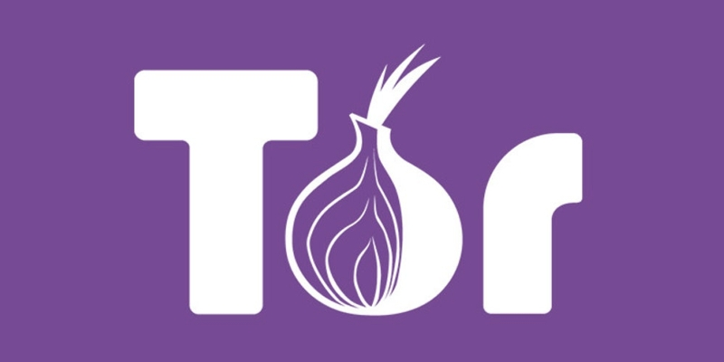

Tor / Tor Browser
A Tor a legismertebb hálózat, ami anonimitástad. A forgalmad három, véletlenszerűen kiválasztott relayen megy át, és minden lépésnél lekerül egy titkosítási réteg. Ezt hívják onion routingnak.
A Tor Browser egy előre beállított Firefox, amivel egyből használhatod a hálózatot. Eléri a sima weboldalakat és a .onion címeket is, ezért ez a legegyszerűbb kezdés.
Az a különlegessége, hogy ennek van messze a legtöbb felhasználója, és ez segít abban, hogy a tömegben el tudj bújni.
A Tor lassabb a sima internetnél, mert a forgalmad több relayen is átmegy. Cserébe ingyenes, nyílt forráskódú, és bárki használhatja. Az anonimitásodat viszont te is veszélyeztetheted, ha bejelentkezel a saját fiókjaidba, vagy kiegészítőket telepítesz a böngészőbe.